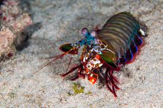
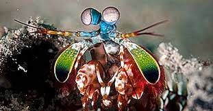
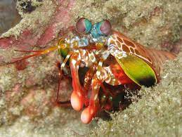
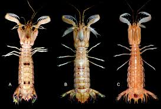
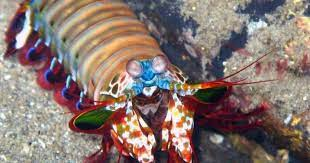

Fatos sobre o Stomatopoda
Informações Gerais
Reino: Animalia
Filo: Arthropoda
Subfilo: Crustacea
Classe: Malacostraca
Subclasse: Hoplocarida
Ordem: Stomatopoda Latreille, 1817
Filo: Arthropoda
Subfilo: Crustacea
Classe: Malacostraca
Subclasse: Hoplocarida
Ordem: Stomatopoda Latreille, 1817
Stomatopoda (ou estomatópode), chamados popularmente de tamarutacas ou de lacraias-do-mar no
Brasil, é uma ordem de crustáceos marinhos da subclasse Hoplocarida, que agrupa cerca de 400
espécies, caracterizadas principalmente pela morfologia da segunda pata torácica, que é
modificada em apêndice subquelado, lembrando uma pata de louva-a-deus.[2]
fonte:Wikipédia, a enciclopédia livre.
fonte:Wikipédia, a enciclopédia livre.
Curiosidades
VOCÊ SABIA?
Apesar de ser conhecido como CAMARÃO-BOXEADOR, o stomatopoda não é um camarão de verdade? É um boxeador, mas não um camarão!
Apesar de ser conhecido como CAMARÃO-BOXEADOR, o stomatopoda não é um camarão de verdade? É um boxeador, mas não um camarão!
VOCÊ SABIA?
Conhecido também como CAMARÃO-PISTOLA, o "soco" do stomatopoda equivale a um tiro de pistola, calibre 22.
Conhecido também como CAMARÃO-PISTOLA, o "soco" do stomatopoda equivale a um tiro de pistola, calibre 22.
VOCÊ SABIA?
Esses crustáceos apresentam a melhor visão do mundo, possuindo 5 fotorreceptores a mais que nós humanos! ÍNCRIVEL, não?
Esses crustáceos apresentam a melhor visão do mundo, possuindo 5 fotorreceptores a mais que nós humanos! ÍNCRIVEL, não?
Imagens





